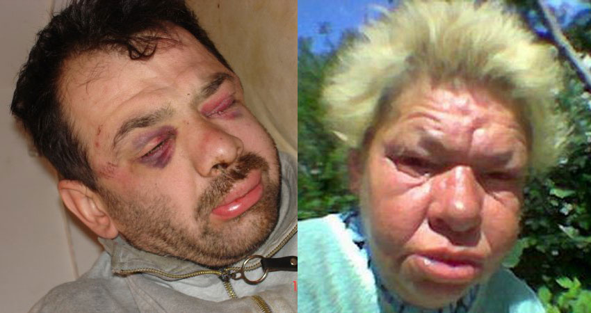

Алкоголизм приводит к глубоким изменениям психики. Еще Гиппократ выразил знание современников об алкоголе словами: «Пьянство – это добровольное безумие».
Злоупотребление алкоголем приводит к социальным и психологическим последствиям, человек меняет свое окружение, так как лица, не злоупотребляющие алкоголем, вызывают в нем чувство вины за собственное пристрастие. Это не приводит к прекращению пьянства, скорее наоборот, он начинает среди трезвых людей искать виноватых в его пагубной привычке.
Дальше – больше. И в конечном итоге пьяница изобретает все новые и новые причины, которые могут его оправдать. Это нежелание признавать собственное заболевание, он стремится приподнять свой социальный статус, возвысить свои бывшие успехи. И с этим же связана лень. У этих людей возникает своеобразное поведение – деградация личности.
Все алкоголики в проявлениях своих характерологических особенностей похожи друг на друга как две капли воды. Легко возникающее раздражение переходит в недовольство, гнев, грубость. В трезвом виде такие люди легко ранимы, а в состоянии опьянения или похмелья они грубы, требовательны, обвиняют окружающих в чем бы то ни было.
Если человек общителен до злоупотребления алкоголем, то, став алкоголиком, он приобретает другие черты: неразборчивость в выборе знакомых, с малознакомыми людьми ведет себя фамильярно, грубо. Эти люди циничны, шутки их неуместны. В одних случаях появляются злоба и гнев по любому поводу, а в других – подавленность, тоскливая раздражительность. Некоторые замыкаются в себе, вплоть до полного отсутствия потребности в общении. Изменения личности постепенно нарастают. Характерно, что, будучи несдержанным в семье, алкоголик пока еще контролирует свое поведение при чужих людях, но постепенно он и при посторонних начинает проявлять несдержанность, пренебрегает мнением окружающих. При возникновении конфликта дома или на работе он клянется исправиться, бросить пить, но с легкостью нарушает данное им слово, продолжает пьянствовать.
Иногда у больного алкоголизмом сохраняется критичноть к происходящим изменениям. Он даже испытывает угрызения совести за свое поведение. Но эти эпизоды становятся все более редкими и в конце концов и вовсе исчезают. Все-таки судьба больного алкоголизмом зависит не от проявлений алкоголизма, а от особенностей личности, которые присущи ей от рождения. Кто-то быстро теряет работу, катится, как говорится, вниз по служебной лестнице, а другой еще долго удерживает свое служебное положение. Кто-то теряет семью сразу, а другой до конца остается семейным человеком.
Под влиянием заболевания характер человека все больше изменяется в худшую сторону. Какие-то черты усиливаются, а какие-то сглаживаются. Страдающему алкоголизмом человеку кажется, что окружающие придираются к нему, недооценивают его. На вопрос, считает ли он себя алкоголиком, никто не ответит: «Да». Такой человек найдет тысячу отговорок на любой факт, приведенный в пользу симптомов его болезни. Например: «Ну, какой я алкоголик? Если бы зарплату пропивал, валялся под забором, семью потерял, с работой не справлялся, тогда – другое дело». Это свидетельствует о многих возможностях человека обманывать самого себя.
Одной из характерных черт людей, страдающих алкоголизмом, является неспособность преодолевать трудности. Алкоголь не делает человека сильным, он усиливает его отрицательные качества, ослабляя положительные. Безволие превращается в утрату самостоятельности. Общительность перерастает в неразборчивость в выборе окружающих (о чем уже говорилось ранее), жизнеспособность – в беспечность, гнев, отмечаются бурная демонстрация обиды, формы истерического поведения. Мужчина или женщина, страдающие алкоголизмом, постепенно перестают выполнять свою повседневную работу по дому. Забываются увлечения, человек все меньше уделяет времени детям. Хотя на словах и в своем видении человек считает, что все нормально и он ничуть не изменился. Пьяница теряет друзей, знакомые стараются не замечать его, избегать контактов с больным алкоголизмом.
На основании всего вышеизложенного, изучая условия, факторы, которые приводят к злоупотреблению спиртными напитками, убеждаешься, что они очень многообразны. Это и психологические факторы: наследственность, конституция; социальные – окружающая человека среда, взгляды его родных, близких, знакомых на алкоголь, его употребление; особенности личности – интересы, взгляды, устои. Наследственность играет важную роль в формировании алкоголизма за счет специфических дефектов воспитания. Родители – образец для подражания. По их образу и формируется личность ребенка.
В условиях нашего общества и именно нашего времени пьянство имеет наибольшее распространение, особенно там, где низок уровень культуры. И это во всех (без исключений!) слоях общества, независимо от материального, интеллектуального развития. Немаловажен факт снисходительного отношения в нашем современном обществе к употреблению спиртных напитков, что скрывается в «алкогольных» обычаях, традициях, нравах и взглядах. Ведь обычай встречать гостей спиртными напитками – самый распространенный.
Отказ от предложения выпить, не подчиниться компании требует проявления определенного мужества. Любой отказ от алкоголя расценивается как недоброжелательное отношение к товарищам.
Алкогольные традиции проявляются и в том, что когда-то наступает такой день, когда родители разрешают детям употребление спиртных напитков. Такие действия взрослых приводят к тому, что ребенок считает употребление алкоголя нормой жизни, формируется положительное отношение к алкоголю и возникает риск возникновения пьянства.
Все больные алкоголизмом ведут себя примерно одинаково – личность становится одноплановой. Физическая зависимость определяет образ жизни.
Алкоголик не делает попыток бороться с недугом, он отдается ему полностью. Мотив у него один: «Пью, чтобы поправить здоровье». Только в пьяном виде он чувствует себя нормально, способен проявить работоспособность. А в трезвом состоянии человек чувствует себя больным. Но затем вновь наступает протрезвление, после чего опять требуется выпивка. Это порочный круг, появляется патологическая зависимость от алкоголя. Потребность выпивки становится выше стыдливости. Пьянство начинает носить открытый характер.
И еще немного о подростках. В наше время имеет место такой феномен, как акселерация. Это ускорение физического развития и полового созревания. Современные подростки уже в 13—15 лет по внешнему виду, сексуальному развитию соответствуют 18—19-летним людям, хотя психическое развитие остается на подростковом уровне. Отмечаются инфантильность психики, внушаемость, подверженность чужому влиянию, нет чувства ответственности, долга.
Они хотят быть самостоятельными. Их везде контролируют: дома – родители, в школе – учителя. Подростки находят «подходящую» среду на улице. Соответственно это не обязательно дети из так называемых неблагополучных семей. Существует масса примеров, когда ребенок из благополучной семьи попадает в нехорошую компанию, а все вокруг удивляются, как такое могло произойти? Ведь родители не учили его этому, подавали лишь хороший пример ребенку!
Понятие «благополучная семья» – это семья с материальным достатком, родители не пьют, ни в чем не отказывают своему ребенку. Но на деле оказывается, что материальное благополучие – это еще далеко не все, что нужно ребенку. В первую очередь ему нужны общение и взаимопонимание с родителями. А материальное благополучие – это самоуспокоение родителей, попытка компенсировать недостаток внимания к своим детям.